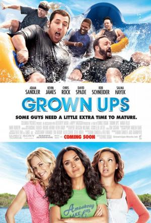

Niños Grandes |
||
|---|---|---|
|  | Sinopsis: Después de treinta años, cinco amigos vuelven a verse para asistir al funeral de su entrenador de baloncesto de la infancia. Con sus esposas e hijos a cuestas, deciden pasar el fin de semana del 4 de julio en una casa cerca de un lago, en la que muchos años antes habían celebrado la conquista de un campeonato. Curiosamente, esos días de convivencia les harán comprender que, a pesar de que ya son personas adultas, en realidad no han madurado. |
Director:Dennis Dugan Reparto:Adam Sandler, Kevin James, Chris Rock Año: 2010 Duracion:97 min Pais:Estados Unidos |
Criticas Profesionales:Rubén RomeroAlgo así como un parque acuático: cuando uno es niño puede ser el paraíso, cuando se hace mayor, aburre y a duras penas refresca. imparable cadena de chistes sexuales y escatológicos |
Trailer |
Obtener:AlquilarComprar |
Registrate/Iniciar Sesion